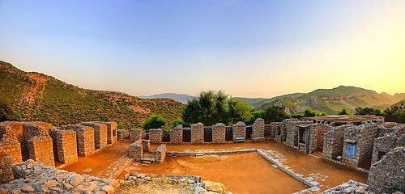
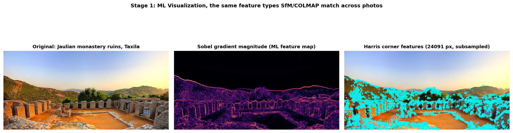
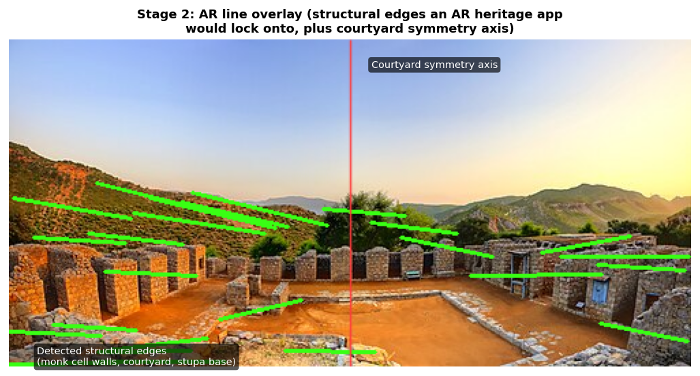
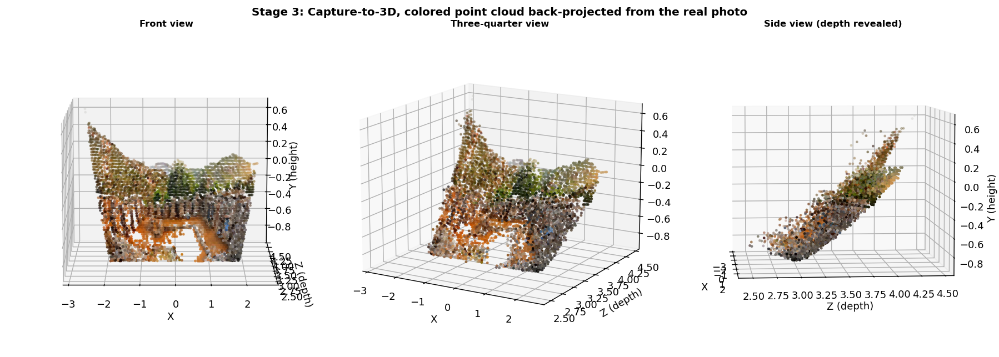

A working walkthrough of the actual pipeline for Team Taxila: a real photo of the Jaulian monastery ruins, the feature-detection and depth math behind reconstruction, and a live, rotatable point cloud you can explore below, not a mockup.
One real photo of the Jaulian Buddhist monastery ruins at Taxila, sourced from Wikimedia Commons via the Taxila Wikipedia article and verified before use, chosen specifically to tie into Team Taxila's group sprint.

Before any 3D output, the Taxila photo was run through real feature detection, the same math a reconstruction pipeline actually uses to find matchable points across images, then an AR-style line overlay simulating what a heritage app would show live on a phone camera.

Sobel gradients and 24,091 Harris corner points, concentrated on the monastery's cell walls, exactly what Structure from Motion matches across photos.

25 tightened Hough line segments tracing real structural edges. An earlier pass produced 271 noisy lines before the detection thresholds were fixed.

A static render of the same reconstruction that's live and rotatable in the viewer below.
This is the actual .ply point cloud file loading in your browser right now, not a screenshot. 13,375 points, colored with each point's real pixel color from the source photo.
The group preservation sprint running in parallel to this individual track, active roster of 3: Rabeea Iman, Ruwaida Shakeel, and Shahram Shafiq (lead).
Rabeea Iman built the team presentation covering Taxila's history, conservation importance, and challenges.
Ruwaida Shakeel built and published the live location page at ruwaidashakeel05.github.io/Taxila, covering the real, current UNESCO warning over cement restoration at Mohra Moradu and Sirkap.
This showcase is my individual curated-footage and build presentation, connected to the same Taxila location the team is covering, but built and submitted separately on the AI-Based 3D Scene Reconstruction track.
As lead, the portal's team "Lead setup" fields (branding, source log) are being finalized alongside this.